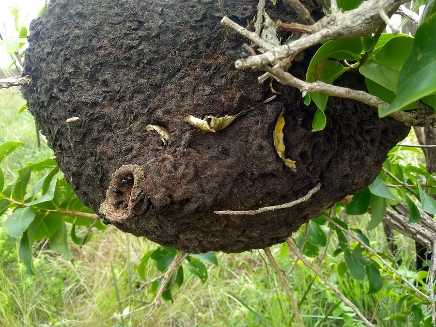

昆虫 · 动物界
无刺蜂 Trigona ventralis

螫针退化、靠咬噬与树脂防御的小型群居蜂，在树洞中筑巢并储存酸味蜂蜜，是热带雨林中的重要传粉者。
- 分类
- 门节肢动物门纲昆虫纲目膜翅目科蜜蜂科属无刺蜂属
- 栖息环境
- 热带雨林、季雨林和村寨附近，巢筑于树洞、竹筒或墙缝
- 地理分布
- 中国云南、广西、海南和台湾，以及东南亚、南亚和中南美洲热带地区
- 保护级别
- 尚无保护级别；森林砍伐与过度取蜜是主要威胁
物种志
无刺蜂的工蜂体长约四至五毫米，体色黑褐，腹部有淡色的横带，体表密被短毛，后足胫节宽大，形成花粉筐。它的螫针已经退化，不能蜇人，遇到侵扰时靠上颚咬噬、分泌树脂涂抹和成群骚扰来防御，因此得名无刺蜂。蜂群体内有蜂王、工蜂和雄蜂的分化，蜂王腹部肥大，翅膀较短。
它分布于中国云南、广西、海南和台湾，以及东南亚、南亚和中南美洲的热带地区，栖息在热带雨林、季雨林和村寨附近，常在树洞、竹筒或墙缝中筑巢，巢内用蜂蜡和树脂混合筑成育幼室和储蜜罐，蜂蜜呈深色、味酸，被称为酸蜂蜜，是当地的传统食品和药材。它是杂食性访花昆虫，为多种林木和作物传粉。群体可多年延续，分蜂时新蜂王带走一部分工蜂另建新巢。它尚无保护级别，森林砍伐和过度取蜜是主要威胁。
形态与习性
- 工蜂体长约四至五毫米，黑褐色，腹部有淡色横带
- 螫针已退化不能蜇人，靠咬噬和树脂防御
- 筑巢树洞、竹筒或墙缝中，用蜂蜡与树脂筑巢
- 蜂蜜深色味酸，称酸蜂蜜，可食可入药
- 群体有蜂王、工蜂和雄蜂分化，可多年延续
- 分布中国西南与海南、东南亚、南亚至中南美洲
趣味知识
- 它根本没有螫针，惹急了只会扑上来咬人和涂抹树脂。
- 它酿的蜜带酸味，当地人叫它酸蜂蜜，当作消暑的饮品。
- 蜂巢藏在树洞里，储蜜罐像一只只小小的陶罐。